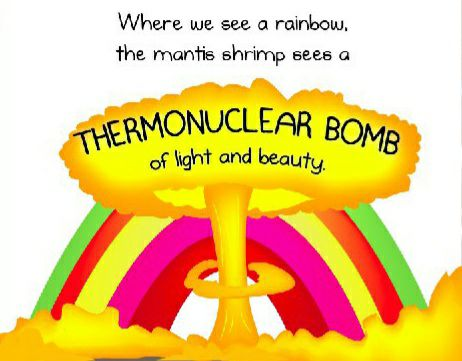
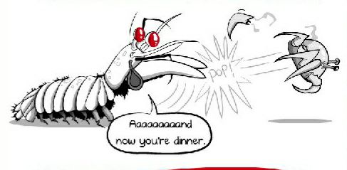

Fatos sobre o Stomatopoda!

Informações gerais sobre esse incrível animal
Seu nome científico é Odontodactylus scyllarus e na tabela abaixo você confere sua classificação científica detalhada:
| Reino | Filo | Subfilo | Classe | Subclasse | Ordem |
| Animalia | Arthropoda | Crustacea | Malacostraca | Hoplocarida | Stomatopoda |
Curiosidades interessantes sobre o Stomatopoda
Super visão para cores
Você sabia que o Stomatopoda tem visão melhor que os seres humanos? A título de referência, os homo Sapiens tem apenas 3 cones receptores de cor (até mesmo uma borboleta conta com mais cones: 5). Essa criatura possui 16 diferentes cones receptores de cor!
Pequenos bullies
E que apesar de sua aparência colorida e amigável, eles são verdadeiros valentões do fundo do mar, seus apêndices de raptura atacam a uma velocidade similar a um disparo de rifle calibre .22, chegando a uma velocidade de 80km/h! Um "soco" tão veloz como esse é capaz de desmembrar suas presas, sendo a forma principal de execução escolhida pelo Stomatopoda.
Referências bibliográficas:
- Stomatopoda - Wikipedia;
- Why the mantis shrimp is my new favorite animal - The Oatmeal.